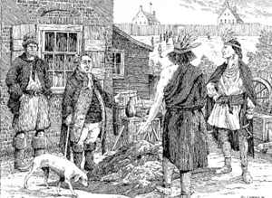

by
Stefan Bielinski
Gerrit G. Lansing was born in Holland before his parents emigrated to New Netherland about 1640. He was the son of Gerrit Frederickse and Elizabeth Hendrix Lansing.
Like his father and stepfather, Gerrit Gerritse was a baker. In 1679, he was counted among the Albany householders and was one of the constables who made that census. He later served his community as firemaster and juror and was involved in street maintenance.
In 1678, he purchased a house and lot on Rom (Maiden Lane) Street. In 1679, he purchased a second house and lot located north of his home on the hill in Albany from Robert Story. He also was involved in the fur trade and had entered into land agreements with Native peoples. Perhaps he was one of the traders depicted conducting business near his Rom Street home.
His wife was Elsie Van Den Uythoff, the daughter of his mother's second husband. The marriage produced nine children who were baptized in the Albany Dutch church where he was a member and church oficer.
In 1689, he was identified with his brothers as a "farmer" in the company of Marte Gerritse. In 1697, his household was configured on the Albany census. Two years later, he joined with his neighbors in swearing allegiance to the King of England. In 1702, his second ward property was assessed at a substantial twenty pounds.Gerrit G. Lansing died in July 1708. In 1709, his first ward property was valued on the city assessment roll. Six of his children raised Albany families.

notes
 Sources: The life of Gerrit G. Lansing is CAP biography number 3698. In later life he was called "Gerrit Lansing, Sr." This profile is derived chiefly from family and community-based resources.
Sources: The life of Gerrit G. Lansing is CAP biography number 3698. In later life he was called "Gerrit Lansing, Sr." This profile is derived chiefly from family and community-based resources.
first posted: 12/30/03